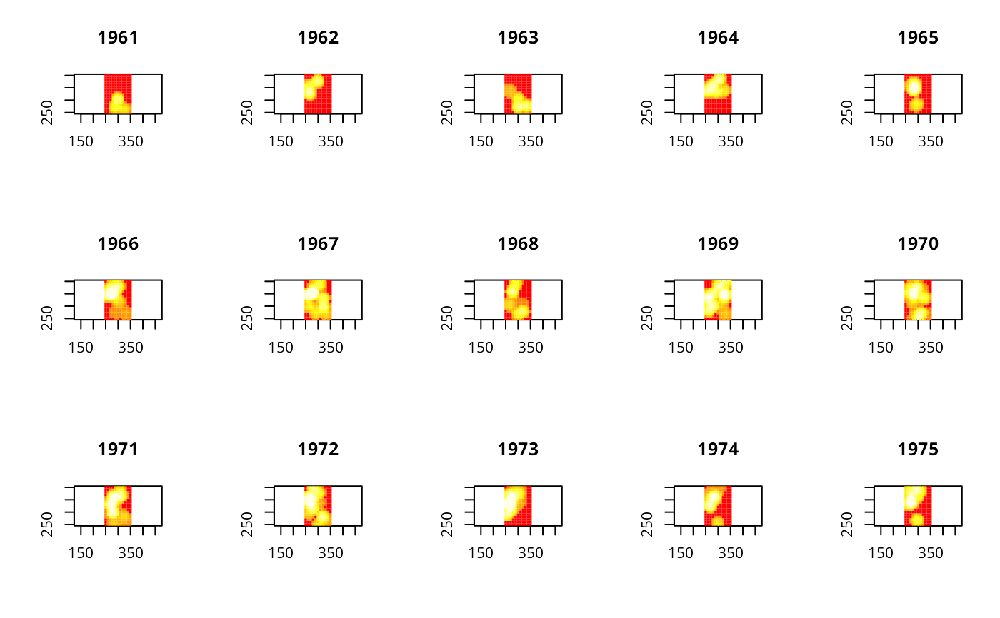

kernel3d.RdCompute the space-time kernel
kernel3d(pts, times, xgr, ygr, zgr, hxy, hz)A matrix of event coodinates x,y.
A vector of event times, t.
The values of x at which to compute the kernel function.
The values of y at which to compute the kernel function.
The values of time at which to compute the kernel function.
The quartic kernel width in the x and y direction.
The quartic kernel width in the temporal direction.
A list is returned. Most of the components are just copies of the
input parameters, except for the $v parameter.
This is a three dimensional array containing the kernel-smoothed
values. Its dimension is
[length(xgr),length(ygr),length(tgr)].
Rowlingson, B. and Diggle, P. 1993 Splancs: spatial point pattern analysis code in S-Plus. Computers and Geosciences, 19, 627-655; the original sources can be accessed at: https://www.maths.lancs.ac.uk/~rowlings/Splancs/. See also Bivand, R. and Gebhardt, A. 2000 Implementing functions for spatial statistical analysis using the R language. Journal of Geographical Systems, 2, 307-317.
data(burkitt)
b3d <- kernel3d(burpts, burkitt$t, seq(250,350,10), seq(250, 400, 10),
seq(365,5800,365), 30, 200)
brks <- quantile(b3d$v, seq(0,1,0.05))
cols <- heat.colors(length(brks)-1)
oldpar <- par(mfrow=c(3,5))
for (i in 1:15) image(seq(250,350,10), seq(250, 400, 10), b3d$v[,,i],
asp=1, xlab="", ylab="", main=1960+i, breaks=brks, col=cols)

par(oldpar)